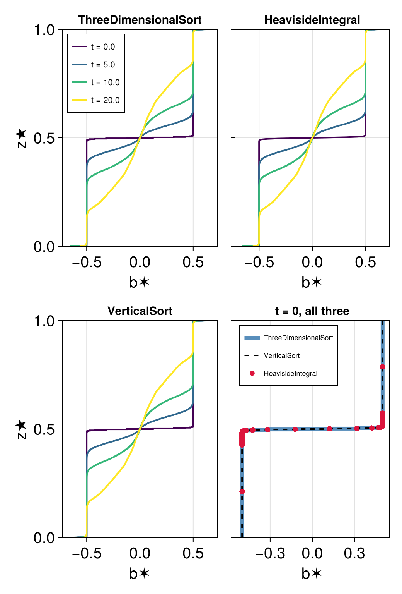
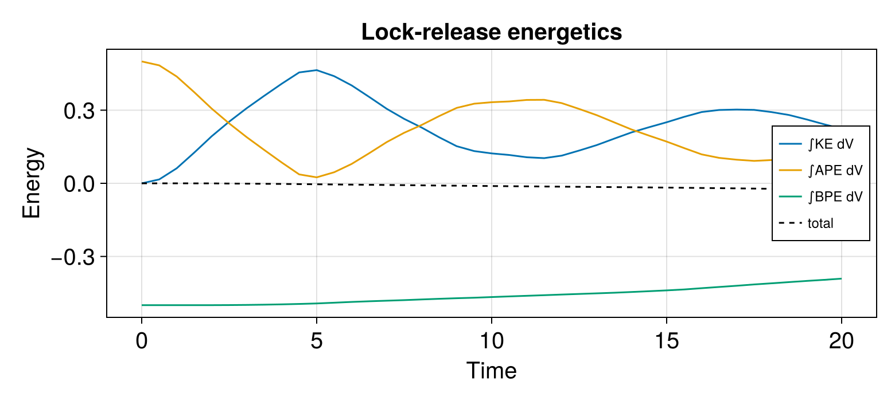

Lock release and the sorted reference state
In this example we run a two-dimensional lock release simulation and use it to watch the sorted reference state, available potential energy and kinetic energy evolve. Along the way we build the reference profile with each of the four methods Oceanostics offers and compare what they do and do not agree on.
Before starting, make sure you have the required packages installed for this example, which can be done with
using Pkg
pkg"add Oceananigans, Oceanostics, CairoMakie"Model and simulation setup
using OceananigansWe work with nondimensional quantities. The buoyancy jump across the lock Δb and the channel depth H set the buoyancy velocity U = √(Δb H) / 2, which is the classic lock-release front speed and the only velocity scale in the problem. The channel is four times as long as it is deep:
Δb = 1 # buoyancy jump across the lock
H = 1 # channel depth
Lx = 4H # channel length
U = √(Δb * H) / 2 # buoyancy velocity0.5The domain is walled at both ends and at top and bottom, so the fronts eventually reflect and the channel fills with a mixed intermediate layer. That is what we want here: it drives the reference profile all the way from a step to something smooth. The grid is isotropic at Δ = H/128:
Nz = 128
grid = RectilinearGrid(size = (4Nz, Nz), x = (-Lx/2, Lx/2), z = (0, H), topology = (Bounded, Flat, Bounded))
model = NonhydrostaticModel(grid; timestepper = :RungeKutta3,
advection = WENO(order=5), # Diffusive and bounded scheme
buoyancy = BuoyancyTracer(), tracers = :b)NonhydrostaticModel{CPU, RectilinearGrid}(time = 0 seconds, iteration = 0)
├── grid: 512×1×128 RectilinearGrid{Float64, Bounded, Flat, Bounded} on CPU with 3×0×3 halo
├── timestepper: RungeKutta3TimeStepper
├── advection scheme: WENO{3, Float64, Oceananigans.Utils.BackendOptimizedDivision}(order=5)
├── tracers: b
├── closure: Nothing
├── buoyancy: BuoyancyTracer with ĝ = NegativeZDirection()
└── coriolis: NothingThe lock itself: buoyant fluid on the right, dense fluid on the left, separated by an interface a couple of cells thick. Smoothing the step over δ keeps the initial condition off the grid scale without changing the fact that almost every cell starts at one of two buoyancies:
δ = 2 * minimum_xspacing(grid) # interface thickness, two cells
lock_release(x, z) = (Δb / 2) * tanh(x / δ)
set!(model, b = lock_release)
simulation = Simulation(model, Δt = 0.1 * minimum_xspacing(grid) / U, stop_time = 20)
conjure_time_step_wizard!(simulation, IterationInterval(5), cfl = 0.7)
using Oceanostics
progress = ProgressMessengers.BasicMessenger()
simulation.callbacks[:progress] = Callback(progress, IterationInterval(500))Callback of Oceanostics.ProgressMessengers.BasicMessenger{Oceanostics.ProgressMessengers.AbstractProgressMessenger} on IterationInterval(500)Diagnostics
We build one z★ per method and write all of them, so the reference state comes out of the run rather than being rebuilt afterwards. They are ordinary Fields that re-sort themselves whenever they are computed, so they can be passed to an output writer.
What each method gives you to write differs, and that difference is the same one the figures below show. The three model-grid methods produce a map of the reference height, one value per cell, on the model grid. VerticalSort instead produces the sorted column itself, so its z★ and the buoyancy that goes with it are already the profile, in order, and need no post-processing at all.
Given that the referece height calculation is nonnlocal, it is generally a computationally-heavy operation and its cost grows faster than the number of cells: see Computational cost per method for how different methods compare and how they scale.
b = model.tracers.b
z★_ranked = reference_height(model, method = ThreeDimensionalSort())
z★_heaviside = reference_height(model, method = HeavisideIntegral())
z★_lookup = reference_height(model, method = ProfileLookup())
z★_column = reference_height(model, method = VerticalSort())
b✶_column = reference_buoyancy(z★_column)1×1×65536 Field{Center, Center, Center} on RectilinearGrid on CPU
├── grid: 1×1×65536 RectilinearGrid{Float64, Bounded, Flat, Bounded} on CPU with 1×0×3 halo
├── boundary conditions: FieldBoundaryConditions
│ └── west: ZeroFlux, east: ZeroFlux, south: Nothing, north: Nothing, bottom: ZeroFlux, top: ZeroFlux, immersed: Nothing
├── operand: SortedBuoyancyState of 1×1×65536 Field{Center, Center, Center} on RectilinearGrid on CPU
├── status: time=0.0
└── data: 3×1×65542 OffsetArray(::Array{Float64, 3}, 0:2, 1:1, -2:65539) with eltype Float64 with indices 0:2×1:1×-2:65539
└── max=0.5, min=-0.5, mean=0.0Both background and available potential energies are built from the same reference height, so we share one rather than letting each diagnostic sort the domain for itself. Note that Eₐ here is the local available potential energy (as defined by Holliday & McIntyre (1981)) and it should always be non-negative
We build one Eₐ per method. Three of the four answer on the model grid and give a map over the domain, which is what the animation below compares. VerticalSort answers on the sorted column, so its Eₐ is ordered by rank rather than by position and is not a map of the flow; it is written anyway because the volume integral comes out the same whichever method builds the reference state. ProfileLookup is that same column read back onto the model grid, matching each cell to the profile through its buoyancy rather than through where it came from.
APE_ranked = AvailablePotentialEnergy(model, z★_ranked)
APE_heaviside = AvailablePotentialEnergy(model, z★_heaviside)
APE_lookup = AvailablePotentialEnergy(model, z★_lookup)
APE_column = AvailablePotentialEnergy(model, z★_column)
KE = KineticEnergy(model)
∫BPE = Integral(BackgroundPotentialEnergy(model, z★_ranked))
∫KE = Integral(KE)
∫APE = Integral(APE_ranked)
∫APE_heaviside = Integral(APE_heaviside)
∫APE_lookup = Integral(APE_lookup)
∫APE_column = Integral(APE_column)
using NCDatasets
filename = "lock_release""lock_release"A single NetCDFWriter copes with the two grids: the model-grid fields are written against x and z, and the column's against its own N-cell vertical axis.
outputs = (; b, KE, APE_ranked, APE_heaviside, APE_lookup, APE_column,
z★_ranked, z★_heaviside, z★_lookup, z★_column, b✶_column,
∫BPE, ∫KE, ∫APE, ∫APE_heaviside, ∫APE_lookup, ∫APE_column)
simulation.output_writers[:fields] = NetCDFWriter(model, outputs,
filename = joinpath(@__DIR__, filename),
schedule = TimeInterval(0.5),
overwrite_existing = true)NetCDFWriter scheduled on TimeInterval(500 ms):
├── filepath: lock_release.nc
├── dimensions: time(0), z_aac_grid1(128), x_faa_grid1(513), x_caa_grid1(512), z_aaf_grid1(129), z_aaf_grid2(65537), x_caa_grid2(1), z_aac_grid2(65536), x_faa_grid2(2)
├── 17 outputs: (APE_ranked, z★_lookup, KE, b, z★_heaviside, APE_column, z★_ranked, ∫APE, ∫APE_heaviside, APE_heaviside, APE_lookup, b✶_column, ∫APE_column, ∫BPE, ∫APE_lookup, z★_column, ∫KE)
├── array_type: Array{Float32}
├── file_splitting: NoFileSplitting
└── file size: 715.7 KiBRun the simulation
run!(simulation)[ Info: Initializing simulation...
[ Info: [[93m000.00%[39m] time = [93m0 seconds[39m, Δt = [93m1.719 ms[39m, walltime = [93m1.441 minutes[39m, advective CFL = [93m0[39m, diffusive CFL = [93m0[39m
[ Info: ... simulation initialization complete (11.076 seconds)
[ Info: Executing initial time step...
[ Info: ... initial time step complete (2.870 seconds).
[ Info: [[93m013.47%[39m] time = [93m2.694 seconds[39m, Δt = [93m4.806 ms[39m, walltime = [93m1.899 minutes[39m, advective CFL = [93m0.7[39m, diffusive CFL = [93m0[39m
[ Info: [[93m024.61%[39m] time = [93m4.922 seconds[39m, Δt = [93m4.798 ms[39m, walltime = [93m2.146 minutes[39m, advective CFL = [93m0.7[39m, diffusive CFL = [93m0[39m
[ Info: [[93m035.59%[39m] time = [93m7.117 seconds[39m, Δt = [93m4.369 ms[39m, walltime = [93m2.393 minutes[39m, advective CFL = [93m0.7[39m, diffusive CFL = [93m0[39m
[ Info: [[93m046.17%[39m] time = [93m9.234 seconds[39m, Δt = [93m3.577 ms[39m, walltime = [93m2.642 minutes[39m, advective CFL = [93m0.7[39m, diffusive CFL = [93m0[39m
[ Info: [[93m057.34%[39m] time = [93m11.467 seconds[39m, Δt = [93m4.669 ms[39m, walltime = [93m2.890 minutes[39m, advective CFL = [93m0.7[39m, diffusive CFL = [93m0[39m
[ Info: [[93m068.93%[39m] time = [93m13.786 seconds[39m, Δt = [93m4.474 ms[39m, walltime = [93m3.145 minutes[39m, advective CFL = [93m0.7[39m, diffusive CFL = [93m0[39m
[ Info: [[93m080.10%[39m] time = [93m16.021 seconds[39m, Δt = [93m4.175 ms[39m, walltime = [93m3.397 minutes[39m, advective CFL = [93m0.7[39m, diffusive CFL = [93m0[39m
[ Info: [[93m090.52%[39m] time = [93m18.104 seconds[39m, Δt = [93m4.055 ms[39m, walltime = [93m3.642 minutes[39m, advective CFL = [93m0.7[39m, diffusive CFL = [93m0[39m
[ Info: Simulation is stopping after running for 2.454 minutes.
[ Info: Simulation time 20 seconds equals or exceeds stop time 20 seconds.
Reference profile
The reference state is what you get by rearranging every parcel adiabatically into the state of minimum potential energy: rank the cells by buoyancy and stack them from the bottom of the domain up. The height a parcel lands at is its reference height $z^\star$, and plotting the buoyancy that goes with it gives the reference profile $b^\star(z^\star)$ — the stratification the flow would have if all of its available potential energy were released.
Everything needed is already in the file. For the column the profile is written as it stands. For the two model-grid methods, z★ and b are both maps over the cells, so pairing them and ordering by z★ recovers the same profile; that reordering is all the "post-processing" amounts to.
using Oceananigans.Fields: interior
filepath = simulation.output_writers[:fields].filepath
b_t = FieldTimeSeries(filepath, "b") # for the movie below
ds = NCDataset(filepath)
times = ds["time"][:]
B = ds["b"][:, :, :] # (x, z, time); y is Flat, so it is dropped
Z3 = ds["z★_ranked"][:, :, :]
ZH = ds["z★_heaviside"][:, :, :]
Z1 = ds["z★_column"][:, :, :] # (1, N, time): the column keeps the model's Flat y, dropped here
B1 = ds["b✶_column"][:, :, :]
close(ds)
# pair a reference-height map with the buoyancy map and order by z★
mapped_profile(Z, n) = (h = vec(Float64.(Z[:, :, n])); p = sortperm(h); (vec(Float64.(B[:, :, n]))[p], h[p]))
# the column is already ordered, so it is read straight off
column_profile(n) = (vec(Float64.(B1[:, :, n])), vec(Float64.(Z1[:, :, n])))
snapshot_times = [0, 5, 10, 20]
snapshots = [argmin(abs.(times .- t)) for t in snapshot_times]
methods = ("ThreeDimensionalSort" => n -> mapped_profile(Z3, n),
"HeavisideIntegral" => n -> mapped_profile(ZH, n),
"VerticalSort" => column_profile)
# `profiles[name][k]` is the `(b✶, z★)` pair for method `name` at the `k`-th snapshot
profiles = Dict(name => [build(n) for n in snapshots] for (name, build) in methods);┌ Warning: Reading boundary conditions from NetCDF files is not supported for FieldTimeSeries. Using default FieldBoundaryConditions for `grid` and `location`.
└ @ OceananigansNCDatasetsExt ~/.julia/packages/Oceananigans/nF8Kf/ext/OceananigansNCDatasetsExt/output_readers.jl:44
All three describe the same reference state, so wherever the buoyancy field is continuous their profiles coincide. They part ways only where cells are tied at exactly the same buoyancy, and a lock is the extreme case: the initial condition saturates to ±Δb/2 away from the interface, leaving just a few dozen distinct buoyancies across tens of thousands of cells.
n_distinct(n) = length(unique(vec(Float64.(B[:, :, n]))))
@info "distinct buoyancies: $(n_distinct(snapshots[1])) at t = 0, " *
"$(n_distinct(snapshots[end])) at t = $(times[snapshots[end]]), of $(prod(size(grid))) cells"
[ Info: distinct buoyancies: 38 at t = 0, 57498 at t = 20.0, of 65536 cells
The profile gets a figure of its own: one panel per method, each showing b★(z★) at the four times above. It starts as a step, two blocks of uniform buoyancy stacked one on the other, and mixing erodes it into a smooth stratification.
using CairoMakie
set_theme!(Theme(fontsize = 20))
fig = Figure();
colors = cgrad(:viridis, length(snapshots); categorical = true)
for (m, (name, _)) in enumerate(methods)
row, col = fldmod1(m, 2) # fill a 2×2 grid row by row
local ax = Axis(fig[row, col]; xlabel = "b✶", title = name, width = 200, height = 280,
ylabel = col == 1 ? "z★" : "", yticklabelsvisible = col == 1, titlesize = 15)
ylims!(ax, 0, H)
for (s, n) in enumerate(snapshots)
b✶, z★ = profiles[name][s]
lines!(ax, b✶, z★; color = colors[s], linewidth = 2, label = "t = $(round(times[n], digits=1))")
end
m == 1 && axislegend(ax; position = :lt, labelsize = 11)
endPrecompiling packages...
548.4 ms ✓ FilePathsGlobExt (serial)
1 dependency successfully precompiled in 1 seconds
Precompiling packages...
445.3 ms ✓ DistancesChainRulesCoreExt (serial)
1 dependency successfully precompiled in 0 seconds
Precompiling packages...
1032.6 ms ✓ TaylorSeriesIAExt (serial)
1 dependency successfully precompiled in 1 seconds
Precompiling packages...
6536.6 ms ✓ OceananigansMakieExt (serial)
1 dependency successfully precompiled in 7 seconds
The fourth panel puts the three side by side at t = 0, where they disagree the most. HeavisideIntegral is drawn as markers rather than a line because its z★ takes only as many distinct values as there are distinct buoyancies, which is a few dozen here against 65536 cells.
row0, col0 = fldmod1(length(methods) + 1, 2)
ax0 = Axis(fig[row0, col0]; xlabel = "b✶", title = "t = 0, all three", width = 200, height = 280,
ylabel = col0 == 1 ? "z★" : "", yticklabelsvisible = col0 == 1, titlesize = 15)
ylims!(ax0, 0, H)
b✶_r, z★_r = profiles["ThreeDimensionalSort"][1]
b✶_c, z★_c = profiles["VerticalSort"][1]
b✶_h, z★_h = profiles["HeavisideIntegral"][1]
lines!(ax0, b✶_r, z★_r; linewidth = 5, color = (:steelblue, 0.9), label = "ThreeDimensionalSort")
lines!(ax0, b✶_c, z★_c; linewidth = 2, linestyle = :dash, color = :black, label = "VerticalSort")
scatter!(ax0, b✶_h, z★_h; markersize = 9, color = :crimson, label = "HeavisideIntegral")
axislegend(ax0; position = :lt, labelsize = 9)Makie.Legend()The three method panels are identical except while the lock is still intact, and that difference is informative rather than an error. At t = 0 almost every cell is tied with thousands of others at one of two buoyancies, and the methods place tied cells differently. ThreeDimensionalSort and VerticalSort give each cell its own slot in the stack, so they draw the true step spanning the full depth. HeavisideIntegral instead collapses each buoyancy class onto the mid-height of the layer it fills, which is what makes z★ a function of buoyancy alone and a clean field to map, but leaves it unable to represent a step as a profile: its z★ only ever reaches the mid-heights of the two blocks, about a quarter of the depth in from each boundary. Once mixing has made the buoyancy field continuous the ties vanish and all three agree to within a grid cell.
resize_to_layout!(fig)
save("lock_release_profiles.png", fig)
Flow animation and local energies
The movie sets the flow beside the energy it carries: buoyancy, kinetic energy, and the local Eₐ built from each of the three methods that answer on the model grid.
KE_t = FieldTimeSeries(filepath, "KE")
APE3_t = FieldTimeSeries(filepath, "APE_ranked")
APEH_t = FieldTimeSeries(filepath, "APE_heaviside")
APEL_t = FieldTimeSeries(filepath, "APE_lookup")
fig3 = Figure(size = (900, 1010))
n = Observable(1)
# `DataAspect` draws the channel at its true proportions, so a `4H` by `H` domain comes out four times
# as wide as it is deep. The width follows from the height, rather than both being set independently.
panel_kwargs = (ylabel = "z", height = 190, aspect = DataAspect())
ax_b = Axis(fig3[2, 1]; title = "Buoyancy b", panel_kwargs...)
ax_KE = Axis(fig3[4, 1]; title = "Kinetic energy", panel_kwargs...)
ax_E3 = Axis(fig3[6, 1]; title = "Eₐ, ThreeDimensionalSort", panel_kwargs...)
ax_EH = Axis(fig3[8, 1]; title = "Eₐ, HeavisideIntegral", panel_kwargs...)
ax_EL = Axis(fig3[10, 1]; title = "Eₐ, ProfileLookup", xlabel = "x", panel_kwargs...)
bₙ = @lift b_t[$n]
KEₙ = @lift KE_t[$n]
E3ₙ = @lift APE3_t[$n]
EHₙ = @lift APEH_t[$n]
ELₙ = @lift APEL_t[$n]
# `Eₐ` and the kinetic energy are both sign-definite, so they get one-sided ranges set from their own
# peak over the run; the buoyancy keeps the symmetric range used above.
KE_lim = maximum(maximum(interior(KE_t[k])) for k in 1:length(times))
Ea_lim = maximum(maximum(interior(APE3_t[k])) for k in 1:length(times))
hm_b = heatmap!(ax_b, bₙ; colormap = :balance, colorrange = (-Δb/2, Δb/2))
Colorbar(fig3[3, 1], hm_b; vertical = false, height = 8)
energy_options = (; colormap = :magma, colorrange = (0, 0.5Ea_lim))
hm_KE = heatmap!(ax_KE, KEₙ; energy_options...)
Colorbar(fig3[5, 1], hm_KE; vertical = false, height = 8)
hm_E3 = heatmap!(ax_E3, E3ₙ; energy_options...)
Colorbar(fig3[7, 1], hm_E3; vertical = false, height = 8)
hm_EH = heatmap!(ax_EH, EHₙ; energy_options...)
Colorbar(fig3[9, 1], hm_EH; vertical = false, height = 8)
hm_EL = heatmap!(ax_EL, ELₙ; energy_options...)
Colorbar(fig3[11, 1], hm_EL; vertical = false, height = 8)
title = @lift "Lock release, t = " * string(round(times[$n], digits = 1))
Label(fig3[1, 1], title, fontsize = 22, tellwidth = false)
resize_to_layout!(fig3)
@info "Animating..."
record(fig3, "lock_release.mp4", 1:length(times), framerate = 8) do i
n[] = i
end┌ Warning: Reading boundary conditions from NetCDF files is not supported for FieldTimeSeries. Using default FieldBoundaryConditions for `grid` and `location`.
└ @ OceananigansNCDatasetsExt ~/.julia/packages/Oceananigans/nF8Kf/ext/OceananigansNCDatasetsExt/output_readers.jl:44
┌ Warning: Reading boundary conditions from NetCDF files is not supported for FieldTimeSeries. Using default FieldBoundaryConditions for `grid` and `location`.
└ @ OceananigansNCDatasetsExt ~/.julia/packages/Oceananigans/nF8Kf/ext/OceananigansNCDatasetsExt/output_readers.jl:44
┌ Warning: Reading boundary conditions from NetCDF files is not supported for FieldTimeSeries. Using default FieldBoundaryConditions for `grid` and `location`.
└ @ OceananigansNCDatasetsExt ~/.julia/packages/Oceananigans/nF8Kf/ext/OceananigansNCDatasetsExt/output_readers.jl:44
┌ Warning: Reading boundary conditions from NetCDF files is not supported for FieldTimeSeries. Using default FieldBoundaryConditions for `grid` and `location`.
└ @ OceananigansNCDatasetsExt ~/.julia/packages/Oceananigans/nF8Kf/ext/OceananigansNCDatasetsExt/output_readers.jl:44
[ Info: Animating...
Eₐ drains from the lock as the fronts accelerate and refills wherever the seiche lifts dense fluid back above its reference height. Being the local form, it is non-negative everywhere. The three Eₐ panels are identical: the methods differ only in where inside a tied run they place z★, and Eₐ cannot see that choice.
Energetics
The same three energies, now volume integrated. Their sum (dashed) is the total, which no exchange among them can alter.
ds = NCDataset(simulation.output_writers[:fields].filepath)
t_e = ds["time"][:]
BPE_int = ds["∫BPE"][:]
APE_int = ds["∫APE"][:]
KE_int = ds["∫KE"][:]
close(ds)
total_int = KE_int .+ APE_int .+ BPE_int
fig2 = Figure(size = (780, 350))
ax = Axis(fig2[1, 1]; xlabel = "Time", ylabel = "Energy", title = "Lock-release energetics")
lines!(ax, t_e, KE_int, label = "∫KE dV")
lines!(ax, t_e, APE_int, label = "∫APE dV")
lines!(ax, t_e, BPE_int, label = "∫BPE dV")
lines!(ax, t_e, total_int; label = "total", color = :black, linestyle = :dash)
axislegend(ax; position = :rc, labelsize = 12)
save("lock_release_energetics.png", fig2)
BPE never turns back, since mixing across density surfaces cannot be undone. Everything the flow can still do sits in APE, which trades with KE as the box seiches, each cycle weaker than the last. The model has no explicit dissipation, so the dashed total drifts down only through the advection scheme's implicit dissipation.
This page was generated using Literate.jl.